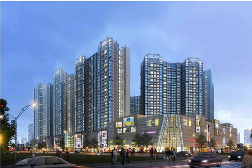
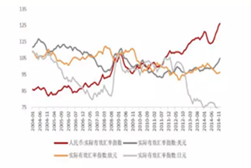

国内限购城市急增至20城 还有哪些城市可能会收紧？
发布时间：2016年10月08日 07:33作者：李小青
今年“十一”长假期间，中国楼市迎来新一轮的收紧调控大潮。自9月30日起直至黄金周结束，北京、广州、深圳、苏州、合肥等19个城市8天内先后出台楼市调控政策。至此，国内限购城市重新扩围至20个。哪些城市出台了政策？新网记者梳理显示，自9月30日至10月7日，北京、天津、苏州、郑州、成都、济南、无锡、合肥、武汉、南京、南宁、广州、深圳、佛山、厦门、东莞、珠海、福州、惠州，这19个涵盖了一线、二线、三线的城市发布了力度不一的楼市调控政策。易居研究院智库中心研究总监严跃进认为，各地选择“十一”长假密集出台政策，希望政策积极被市场所吸收，不被过度地解读。因为，如果各地政策出台的时间点不紧凑，会使得部分未出政策的城市面临更大的压力，即防范部分炒房需求从政策收紧城市转移到政策未收紧城市。例如，东莞出台限购政策，除了房价上涨过快等其他城市都有的共性原因外，一个非常特殊的原因是深圳限购升级后，部分刚需购房者和炒房者会转移需求到东莞，进而造成东莞楼市存在交易规模上升、价格攀升等压力今年“十一”长假期间，中国楼市迎来新一轮的收紧调控大潮。
自9月30日起直至黄金周结束，北京、广州、深圳、苏州、合肥等19个城市8天内先后出台楼市调控政策。至此，国内限购城市重新扩围至20个。哪些城市出台了政策？新网记者梳理显示，自9月30日至10月7日，北京、天津、苏州、郑州、成都、济南、无锡、合肥、武汉、南京、南宁、广州、深圳、佛山、厦门、东莞、珠海、福州、惠州，这19个涵盖了一线、二线、三线的城市发布了力度不一的楼市调控政策。易居研究院智库中心研究总监严跃进认为，各地选择“十一”长假密集出台政策，希望政策积极被市场所吸收，不被过度地解读。因为，如果各地政策出台的时间点不紧凑，会使得部分未出政策的城市面临更大的压力，即防范部分炒房需求从政策收紧城市转移到政策未收紧城市。例如，东莞出台限购政策，除了房价上涨过快等其他城市都有的共性原因外，一个非常特殊的原因是深圳限购升级后，部分刚需购房者和炒房者会转移需求到东莞，进而造成东莞楼市存在交易规模上升、价格攀升等压力。
“十一”前少数二线城市出台了收紧楼市的限购或限贷政策，此次黄金周期间，北京、苏州、深圳、南京、厦门等城市属于“加码”调控。例如，北京分别将购买首套和二套普通住宅的首付款比例提至35%、50%。至此，北京、深圳、合肥、苏州等城市限购力度恢复到2014年“9.30”之前。各城市新一轮楼市调控政策中，天津、郑州、成都、济南、无锡、福州等地则同时出台了限购、限贷等措施，且多地采取了“分区调控”模式。例如，天津对已有1套住房的非本市户籍家庭，暂停在市内六区和武清区再购房，同时提高其首套房商贷首付比例至40%。
南宁和惠州出台的新政策则未提及限购限贷政策，基本上是从规范市场交易秩序、稳定市场预期等出发。例如，南宁要求房地产开发企业实际销售价格不得高于预售申报价。南宁和惠州出台的新政策则未提及限购限贷政策，基本上是从规范市场交易秩序、稳定市场预期等出发。例如，南宁要求房地产开发企业实际销售价格不得高于预售申报价。南宁和惠州出台的新政策则未提及限购限贷政策，基本上是从规范市场交易秩序、稳定市场预期等出发。
张大伟表示，各个城市间的政策会产生叠加的效果。从国庆长假期间的成交量来看，市场成交量比去年同期已经有了一个明显的下滑，特别是在一二线城市大部分市场的成交量跌幅已经超过了30%展望未来，中国指数研究院指出，在地方政府一系列收紧政策影响下，有望抑制部分投资投机需求，房价涨幅将逐步趋稳。
“年底前，个别大城市房价依然会上涨，只不过涨幅没有近期的大；部分城市或在明年价格有所下降。”严跃进认为，年底前市场需求依然属于高位，部分房企会加快推盘。到了明年，市场整体成交量或会下滑，但长期看，政策的效力依然会减弱，要警惕各类规避政策的新做法。“年底前，个别大城市房价依然会上涨，只不过涨幅没有近期的大；部分城市或在明年价格有所下降。”严跃进认为，年底前市场需求依然属于高位，部分房企会加快推盘。到了明年，市场整体成交量或会下滑，但长期看，政策的效力依然会减弱，要警惕各类规避政策的新做法。“年底前，个别大城市房价依然会上涨，只不过涨幅没有近期的大；部分城市或在明年价格有所下降。”严跃进认为，年底前市场需求依然属于高位，部分房企会加快推盘。到了明年，市场整体成交量或会下滑，但长期看，政策的效力依然会减弱，要警惕各类规避政策的新做法。